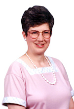

 On Tuesday, May 21, 2002, Christine S. Patrick will present a public program entitled "Washington and Schuyler: The Father of Our Country Visits Albany." Dr. Patrick currently is assistant editor of The Papers of George Washington at the University of Virginia and is an expert on the American Revolution. Her appearance in Albany comes as the featured address at the annual meeting of the Friends of Schuyler Mansion State Historic Site. The lecture will be held in the great hall of the Mansion at 7:00 pm. Light refreshments will be served! A native of Cobleskill whose ancestors were among the earliest settlers of the area, Christine Sternberg Patrick earned a doctorate in history at the University of Buffalo where she produced a doctoral dissertation on Samuel Kirkland - a Presbyterian missionary among the Oneidas and a contemporary of both Generals Schuyler and Washington. She has taught history at Niagara University, the University of Georgia, and at James Madison University. Her appearance in Albany is sponsored by the Friends of Schuyler Mansion - a chartered educational organization that furthers the restoration, interpretation, and public awareness of the eighteenth-century home of General Philip Schuyler. The Friends sponsor an annual meeting each Spring to attract new members. While in Albany, Professor Patrick also will hold an informal seminar for staff and friends of the Colonial Albany Social History Project. For more information on the May 21 program, call Schuyler Mansion State Historic Site at (518) 434-0834.
|